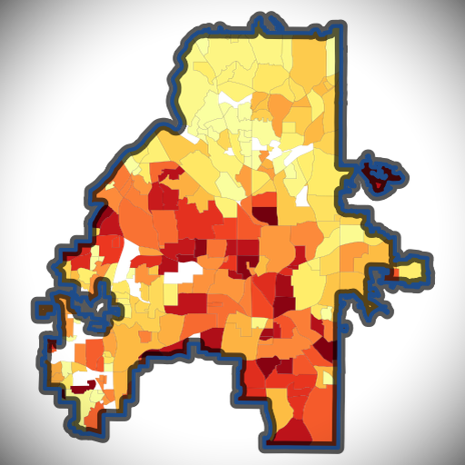
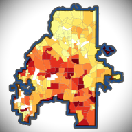

512px — on checker / white / dark

512 transparent
on white
on dark
192px

192
on white
on dark
Favicons — 48 / 32 / 16
32px @ 1.5×
32px
16px @ 2×
16px
32 on white
32 on dark
16 on white
16 on dark
Rounded-square (CSS border-radius, Apple-style)
512 rounded
192 rounded